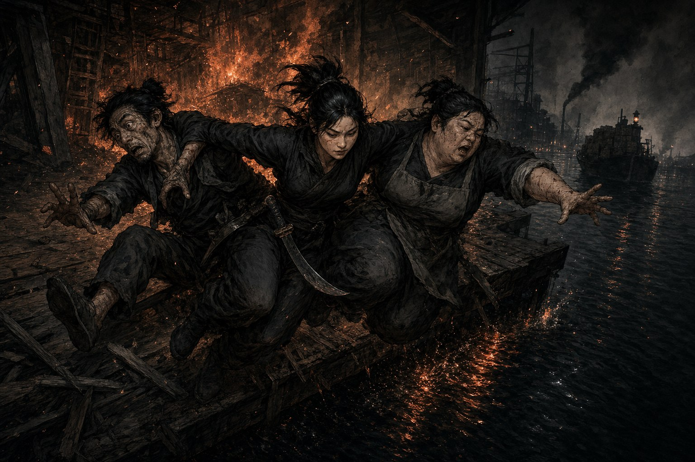

지금 남아 있는 여섯 해의 첫 칸을 만든 사람들
2020년 1월 2일에 시작한 캠페인이 2025년 2월 22일에 44세션으로 끝났다. 그 첫 20세션, 그러니까 전체의 절반 가까이가 시즌1과 시즌2다. 시즌3부터의 로스터만 보면 이들이 잠깐 스쳐간 사람처럼 보이지만, 순서를 바로 놓고 보면 반대다. 크로우스풋의 골목도, 망나니즈라는 조직도, 후기를 매주 쓰는 관습도 이들이 있던 자리에서 처음 생겼다.
세 사람은 각자 다른 것을 남겼다. 나위는 룰이 무엇을 하라고 만들어졌는지를 가장 먼저 이해해 남에게 보여줬고, 참꽃마리는 캠페인의 톤 자체를 한 판정으로 바꿔 놓았다. 히러는 두 시즌을 끝까지 가지 못했지만, 남의 캐릭터 안에 자기 아이디어를 여러 개 남기고 갔다. 이 셋을 한 장에 묶은 것은 그 기록이 서로를 설명하는 방식으로 얽혀 있어서, 따로 떼면 오히려 읽히지 않기 때문이다.
서로의 캐릭터를 만들어 준 자리
시즌1의 세션0에는 서로의 캐릭터에 질문을 던지는 시간이 있었고, 그 녹취가 통째로 남아 있다. 이 문서를 읽으면 네 PC의 설정 중 상당수가 그 캐릭터의 플레이어가 아니라 옆자리에서 나왔다는 것이 보인다.
| PC | 플레이어 | 남이 붙여 준 설정 | 제안자 |
|---|---|---|---|
| 마리 터틀러 (불곰) | 참꽃마리 | 교주가 여동생을 인질로 잡고 있다 | 나위 |
| 알도 세보이 (바퀴벌레) | 직스 | 연대보증을 씌우고 도망친 빚 40 | 나위 |
| 알도 세보이 (바퀴벌레) | 직스 | 그림자의 두목 지향 · 공무원과의 원한 | 히러 |
| 모스 클리거 | 히러 | 참전 후 승전의 몫을 못 받고 전역 | 본인 · 마스터 |
가장 잘 알려진 것이 불곰의 여동생이다. 마리 터틀러의 동기를 두고 이야기가 겉돌던 중에 나위가 “여동생을 인질로 잡고있는거 아녜요?”라고 던졌고, 참꽃마리가 곧바로 받았다. “아 그거 좋다. 택합니다.” 인질이 된 여동생은 그 뒤로 시즌1 내내 불곰을 움직이는 축이 된다.
두 사람 다 그 자리를 나중에 후기에서 따로 되짚었다.
“여동생이 잡혀있다는 설정은 나위님이 제안해주셨었는데 이런식으로 제가 생각하지 못한 설정이나 제안같은걸 받는것도 무척 기분좋고 재미있는 일이었습니다. 사람의 상상력은 한계가 있다보니 혼자서 생각하면 그 캐릭터가 그 캐릭터로 나오는건 어쩔 수 없는것 같아요.” — 참꽃마리, 시즌1 캠페인 후기
“캐릭터 시트를 만들 때 서로에게 질문하는 시간이 많은 도움이 되었습니다. 다른 캐릭터들에게 제안을 할 때도 재미있었어요. 채택해 주신 설정도 뿌듯했고요(*이 사람은 관종이다).” — 나위, 시즌1 캠페인 후기
같은 자리를 한쪽은 받은 사람으로, 다른 한쪽은 준 사람으로 기억한다. 어둠칼의 캐릭터 메이킹은 원래 이렇게 굴러가라고 만들어진 절차인데, 이 팀은 첫 세션 전에 이미 그것을 하고 있었다. 세션0 직후에 두 사람이 남긴 소감이 그 이해를 그대로 보여준다.
“캐릭터를 어느정도 비워놓고 캐릭터가 입체적으로 채워지거나 그때그때 상황에따라 생각지 못한 설정이나 성격이 드러나는걸 좋아하는데, 어둠칼은 확실히 빡빡하게 짜두면 오히려 스토리 진행하기가 어렵겠구나 하는 생각이 들었다.” — 참꽃마리, 세션0 후기
“어둠칼 책을 샀습니다. 캐릭터 메이킹 때의 대화도 재미있었고 세계도 흥미로웠습니다. 대화와 합의를 통해 더 재미있는 이야기를 끌어 가는 방식의 플레이를 권장하는 것 같아서 다음 세션이 몹시 기대됩니다.” — 나위, 세션0 후기
나위 — 룰의 목적을 먼저 읽고 남에게 넘긴 사람
| 시즌 | PC | 플레이북 | 본명 |
|---|---|---|---|
| 시즌1 망나니즈 | 네눈박이 | 거머리 | 힉스 베일 |
| 시즌2 세이렌 상사 | 세이지 | 할리퀸 | 톰 스테이먼 |
네눈박이는 술을 찾아다니고 이상한 발명품을 만드는 괴짜였는데, 그 성격은 취향이 아니라 설계였다. 나위는 시즌1 캠페인 후기에서 그 의도를 그대로 적어 둔다.
“네눈박이를 기본적으로 꾸준히 아무말 하는 캐릭터로 만들고 싶었습니다. 지나치면 귀찮아지지만, 그런 캐릭터가 있을 땐 상대적으로 RP에 같이 하시는 분들이 잘 적응하더라고요.” — 본인, 시즌1 캠페인 후기
전원이 CoC 경험만 가지고 모인 테이블에서 아무 말이나 먼저 던지는 캐릭터를 하나 세워 두면 남들이 말을 얹기 쉬워진다는 계산이다. 이것이 실제로 그렇게 작동했다는 증언이 같은 시즌의 다른 후기에서 나온다.
“마리님처럼 저도 이 장면을 계속 생각하며 어둠칼이라는 시스템을 이해하게 됐어요. 다른 룰이었다면 무언가 잘못되었다는 느낌을 계속 받았을거에요. 하지만 나위님은 먼저 시스템의 목적을 이해해 가이드가 되어주셨다고 생각합니다. 게다가 네눈박이는 회상도 제일 적극적으로 활용했었죠.” — 직스, 시즌1 캠페인 후기
플래시백은 계획을 미리 세우는 대신 필요해진 시점에 과거를 사후에 만들어 넣는 규칙이라, CoC에 익숙한 테이블에서는 잘 쓰이지 않는다. 나위는 그것을 창고 건수에서 가장 먼저 꺼내 썼고, 마스터가 시즌1을 닫으며 남긴 총평도 같은 지점을 짚는다.
“네눈박이는 기본적으로 상황을 잘 이해하고, 도구들을 통해 판을 흔들고 항상 돌파구를 찾아내는 점이 멋졌습니다. 잘 계획된 상황과 위치에서 터지는 섬광탄이나 연막탄 한 발은 총알 수백 발 보다 값진 법이겠죠. 어둠칼의 플래시백 시스템이 그것을 가능하게 하고요. 플레이어가 룰을 적극적으로 활용하면 PC도 룰도 더 빛나는거죠.” — 마스터, 시즌1 캠페인 후기
정작 본인의 후기는 자기 활약보다 방침의 수정에 지면을 쓴다. 헛소리 캐릭터를 굴리는 일의 위험을 스스로 적어 두는 식이다.
“플레이어 분들과 마스터가 잘 받아 주셔서 망정이지 잘못하면 캐릭터가 너무 튀어나갈 뻔했던 것은 반성합니다…” — 본인, 시즌1 캠페인 후기
시즌2에서 그는 그 반성을 설계로 옮긴다. 할리퀸 세이지는 네눈박이의 정반대 축에서 출발한다.
“저번 시즌에서 알중+좀 이상한 캐릭터를 연기해봤던지라, 이번에는 상식인+혓바닥 캐릭터로 짜려고 했더니 ‘도스크볼에 돌아왔더니 사기꾼인 내가 제일 상식인이고 상사의 위장직원 동료들은 사실 사고를 잘 치는 살벌한 누님들이었던 건에 대하여’ 같은 라노베 제목이 생각나는 구성이 되었습니다.” — 본인, 시즌2 1화 후기

바꾼 방침은 첫 세션부터 눈에 띄었다.
“나위님 할리퀸이나 거미 잘하실거라고 생각은했는데 너무나 직업과 RP와 플레이어의 세조합이 완벽했던거같아요 ㅋㅋㅋㅋㅋㅋㅋ 와 술 마시게 하는 RP가 진짜 너무 능숙한거에요 사회생활의 고통과 괴로움이 느껴졌습니다.” — 참꽃마리, 시즌2 1화 후기
세이지의 플레이에는 나위가 어떤 판단을 좋아하는지가 남아 있다. 판정 하나를 성공률이 아니라 장면의 값어치로 결정하는 쪽이다. 고아원 건수에서 그는 “로스트가 된다 해도 트라우마 하나쯤 얻고 하지 뭐! 하고 저항해 결국 고아를 살린 게 보람찼습니다”라고 적고, 곧바로 “사실 확률 계산을 잘못해서 자신있게 시도한 거긴 한데”라고 덧붙인다.
그의 후기 열세 편 중 가장 짧은 것은 잘 안 풀린 세션 다음에 쓴 세 줄이다. 여기에도 남을 탓하는 문장은 없다. “후기 쓰기 어려운 세션이었습니다. 잘 노는 것은 참 어려운 것 같습니다. 초여명 가이드를 두 번쯤 더 읽어 봐야겠습니다.”
참꽃마리 — 캠페인의 톤을 한 판정으로 바꿨다
| 시즌 | PC | 플레이북 | 본명 |
|---|---|---|---|
| 시즌1 망나니즈 | 불곰 | 칼잡이 | 마리 터틀러 |
| 시즌2 세이렌 상사 | 잿빛새 | 유령사 | 펜데린 녹스 |
시즌1 1화, 불곰이 처음 마주친 경비 NPC에게 곧장 달려가 칼자루로 제압한다. 마스터가 시즌 전체를 회고하며 첫 손에 꼽는 장면이 이것이고, 그 이유가 중요하다.
“가장 인상적이었던건 불곰이 1화에서 처음 만난 경비 NPC를 달려가서 칼자루로 제압한 순간이었습니다. 그 순간에 캠페인 전체의 스타일이 조금 바뀌었을 겁니다. 원래 제가 생각한 이 캠페인의 분위기는 더 어둡고 냉혹하고 잔인했거든요. 그런데 1화에서 불곰이 너무 멋있어서.. 좀 더 스타일을 넣어보자고 생각하게 되었고 지금 와서는 잘 된 일이었다고 생각합니다.” — 마스터, 시즌1 캠페인 후기
이후 다섯 시즌을 관통하는 이 캠페인의 톤 — 어둡지만 스타일리시한 쪽 — 이 여기서 한 번 꺾였다는 뜻이다. 정작 본인은 같은 회차 후기에서 그것을 계획이 어긋난 일로 적었다.
“묵묵하고 말없는 타입을 상상했었는데 온갖곳을 다 칼로 일단 때려보고 입도 험하고(..) 정말 생각보다는 예상치 못한 캐릭터였습니다. 시트에 적혀있는 묘사는 그냥 겉모습 설정이라고 생각해주세요....” — 본인, 시즌1 1화 후기

불곰의 앞뒤 안 가리는 플레이는 팀의 신뢰 구조도 바꿔 놓았다. 직스는 “첫 화에서 경비원을 보자마자 달려가 제압하는 순간 바퀴벌레의 목숨을 불곰에게 맡기게 되었다는걸 깨달았습니다”라고 적고, 나위는 개그의 상대역으로 그를 기억한다.
“마리님은 확 뭔가 피드백이 오는 플레이를 해 주셔서 개그를 할 때 반응을 기대하게 되고는 했습니다. 앗 웃어주신다(기쁨)!. 든든하기로는 첫째가는 탱딜이셨고요.” — 나위, 시즌1 캠페인 후기
시즌2의 잿빛새는 그 반대편에서 시작한다. 유령사이고, 상냥하고, 판정 대부분을 남을 돕는 데 쓴다. 본인의 설계 의도가 후기에 남아 있다.
“잿빛새는 자기가 가족에게 사랑을 받았고 사실 가족에게 그만큼 돌려주진 못한 캐릭터라는 설정이 있었습니다. 그래서 자신이 가족에게 받았던것을 남에게 해주고 싶어할거란 생각을 했어요.” — 본인, 시즌2 캠페인 후기
그리고 그 설정이 테이블 위에서 어떻게 도착했는지를 함께 플레이한 두 사람이 각각 적었다.
“마리님은 다른 캐릭터들이 판정할때마다 먼저 나서서 도움을 주곤 하셨는데 잿빛새는 불곰의 앞장서서 막아주는 모양의 도움과는 또다른 느낌의 도움을 자주 보여주었던 것 같습니다. 이렇듯 대화를 하거나 판정을 함에 있어서 마리님은 전체를 바라보는, 시야를 넓게 두는 플레이를 보여주셔서 대단하다고 생각했어요.” — 직스, 시즌2 캠페인 후기
오랑시도 시즌2를 닫으며 “생판 연도 없던 캐릭터들이 자연스럽게 한마음이 되어 움직일 수 있는 원동력을 준 것도 잿빛새의 상냥함 덕분인 것 같아요”라고 적었다.
같은 사람이 만든 두 PC가 이렇게 갈렸다는 점을 마스터는 캠페인 후기에서 따로 짚는다.
“마리님은 처음에 분명 RPG 경험이 없다고 하셨던 것 같은데도, 캐릭터마다 개성이 살아있고 분명히 구분되는 성격을 보여줘서 굉장히 숙련된 플레이어같다는 느낌을 받았습니다. (…) 잿빛새의 상냥함은 불곰에게서 찾아보기 어려웠던 것이지요.” — 마스터, 시즌2 캠페인 후기
정작 본인의 평가는 편한 쪽을 버렸다는 데 방점이 있다.
“잿빛새는 제게 제일 오래 기억나는 캐릭터가 될것 같아요. 사실 rp하고 활동하기 편한건 불곰같은 캐릭터였어요. 편하니까..(?) 생각을 안해도 되니까…(?)” — 본인, 시즌2 캠페인 후기
후기 21편은 이 캠페인의 초기 기록에서 가장 큰 덩어리다. 그중 상당수가 매 화의 NPC를 한 명씩 따로 논평하는 형식인데, 지금 남아 있는 시즌1-2의 NPC 인상은 대부분 이 글들에서 온다.
히러 — 짧게 있었지만 남의 캐릭터 안에 남았다
히러는 시즌1 초반에 사냥개 모스 클리거를 맡았고 중도에 자리를 비웠다. 후기는 한 편도 남기지 않아서, 그에 대해 확인할 수 있는 것은 세션0 녹취의 발화와 남들이 그를 언급한 대목뿐이다. 그래서 이 절은 짧다. 다만 짧은 만큼 남은 것이 선명하다.
녹취에서 그의 발화가 가장 많이 붙은 자리는 자기 PC가 아니라 알도 세보이, 그러니까 직스의 바퀴벌레 쪽이다. 족제비의 성격이 잡히지 않던 대목에서 그가 방향을 정해 준다.
“그림자의 두목을 지향한다고 하면 될 것 같은데. 조직을 부려서 얻는 이득만 취하고… 책임은 지기 싫다. 드러나고 싶진 않다. 좋네요 족제비같네요” — 히러, 시즌1 세션0 녹취
바퀴벌레가 왜 공무원을 싫어하는지도 그의 제안에서 나왔다. “노조원이 추진하고 있던 일을 서류 몇장으로 백지화 시켜서 사람들 자살하고.. 그럼 웬수될 수 있지 않을까요”라는 한 줄이 그대로 설정이 됐다.
자기 PC를 설명할 때는 능력치가 아니라 선 하나를 먼저 말했다.
“범죄자는 범죄자인데 어린애나 누가봐도 선량한 사람에게 피해를 주려고 하지 않아요. 딱히 의로운 것도 아니에요. 그사람들한테 돈을 주거나 그런건 아닌데” — 히러, 시즌1 세션0 녹취
승전의 몫을 정치질 잘하는 자들에게 빼앗기고 군을 등진 저격수, 사람보다 자기가 길들인 짐승을 더 믿는 남자. 시즌1 리캡의 프롤로그에 네 명이 나란히 소개되는데 그중 한 자리가 이 캐릭터이고, 그 소개는 전부 이 녹취에서 나왔다.
빈자리 역시 기록에 남았다. 나위는 시즌1을 닫으며 그 부재가 조직의 성격을 어떻게 바꿨는지를 적는다.
“도베르만 캐릭터가 플레이어블 캐릭터로 남아있었으면 또 다른 방식으로 굴러가는 조직이 되었을지도 모르겠다는 생각을 했습니다. 사실 도베르만이 리타이어하면서, 무투파가 둘은 있어야 때려부수려나, 폭력이 적으니 우리 조직은 테크니컬하게 플레이해야 되려나…하고 플레이를 했거든요? 그런데 불곰이 모두 다 부수고 말아서 결과적으로 폭력배가 된 기분입니다.” — 나위, 시즌1 캠페인 후기
한 사람이 빠진 자리를 나머지가 어떻게 메웠는지가 이 한 문단에 다 들어 있다. 망나니즈가 기술로 푸는 조직이 될 수도 있었다는 가정과, 실제로는 불곰이 전부 부숴 버려서 폭력배가 되었다는 결론이 같이 있다.
서로를 파트너로 적었다
시즌1을 닫는 두 후기에는 우연히 같은 이야기가 마주 놓인다. 서로 상의하지 않고 각자 쓴 글이다.
“네눈박이→불곰 : 첫 화부터 위스키 승질대로 끼얹었다가 로스트날 뻔한 것을 구해준 시점에서 네눈박이가 불곰의 농담마다 장단을 맞출 것은 당연한 일이었을 것입니다. 네눈박이는 불곰을 꽤 좋은 친구로 생각하고 있을 거예요.” — 나위, 시즌1 캠페인 후기
“네눈박이의 발명품은 마지막까지 빛을 발했습니다. 잠행을 성공적으로 무사히 계속 할수 있었던것도 너무멋있었어요. (…) 불곰은 네눈박이를 파트너라고 생각하고 있을거에요.” — 참꽃마리, 시즌1 마지막화 후기
캐릭터끼리의 관계를 플레이 바깥에서 각자 문장으로 확정해 두는 일이 시즌1부터 있었고, 그것이 지금 여섯 해치 기록의 형식이 됐다. 마스터가 다섯 시즌 44세션을 닫으며 남긴 감사 명단에도 세 사람의 이름이 나란히 들어 있다.
“중간에 캐메라도 한 세션 이상 참여해주셨던 나위님, 참꽃마리님, AAAA님, 퐁님, 히러님 모두 감사했습니다. 최종화 후기에도 썼지만 평생 남을 기억이 생긴 것 같아요.” — 마스터, 시즌5 캠페인 후기
시즌1 세션0의 녹취를 다시 읽으면, 아직 아무것도 정해지지 않은 자리에서 네 사람이 서로의 인물에 설정을 하나씩 얹어 주는 장면이 그대로 남아 있다. 여동생, 연대보증, 그림자의 두목, 어린애에게는 손대지 않는다는 선. 그 뒤로 다섯 시즌이 이어졌고 플레이어도 룰도 여러 번 바뀌었지만, 지금 남은 기록의 첫 칸에는 여전히 그 네 사람의 목소리가 들어 있다.
근거는 저장소에 미러링된 어둠칼 후기 224편 가운데 나위 13편, 참꽃마리 21편과 시즌1 세션0 녹취, 그리고 마스터·직스·오랑시의 후기에서 세 사람을 언급한 대목이다. 히러는 후기를 남기지 않아 녹취와 타인의 언급으로만 확인했고, 모스 클리거가 시즌1 후기에 등장하는 “도베르만”과 같은 캐릭터인지는 확증을 찾지 못해 여기서도 단정하지 않았다.